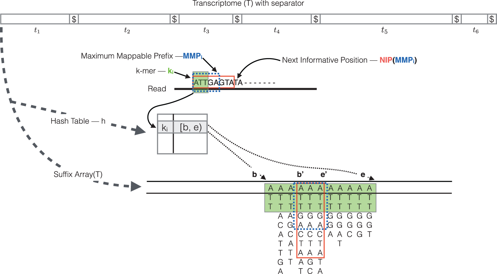

Whole transcriptome analysis of Arabidopsis thaliana
Contributors
Introduction
Speaker Notes
- Let’s start with the introduction.
Introduction: plant response to stress

Speaker Notes
- As sessile organisms, the survival of plants under adverse environmental conditions depends, to a large extent, on their ability to perceive stress stimuli and respond appropriately to counteract the potentially damaging effects.
- Coordination of phytohormones and reactive oxygen species are considered a key element for enhancing stress resistance, allowing fine-tuning of gene expression in response to environmental changes.
- These molecules constitute complex signaling networks, endowing with the ability to respond to a variable natural environment.
Introduction: role of brassinosteroids

Speaker Notes
- Brassinosteroids are a group of plant steroid hormones essential for plant growth and development, as well as for controlling abiotic and biotic stress.
- Structurally, brassinosteroids are polyhydroxylated sterol derivatives with close similarity to animal hormones.
- Brassinosteroids have the ability to stimulate plant growth, influencing germination, rhizogenesis, flowering, senescence, abscission and ripening processes.
- In addition, several experimental results have demonstrated their ability to confer resistance to several types of abiotic and biotic stresses, such as heat, cold, salinity and drought.
Introduction: plant microRNAs

Speaker Notes
- miRNAs, mainly 20–22 nucleotide small RNAs, are characterized for regulating gene expression at the post-transcriptional level.
-
miRNAs are distinguished from other small RNAs by being generated from precursor harboring an imperfect stem‐loop structure. Unlike in animals, the pre-processing of plant miRNA occurs in the nucleus.
- The pre miRNAs are then exported to the cytoplasm after methylation and incorporated into the Argonaute 1 protein to form an RNA-induced silencing complex. The miRNA itself does not have the ability to cleave mRNAs or interfere with translation, but it plays a role in scanning the appropriate target.
Introduction: miRNAs as master regulators
-
Multiple miRNA genes are regulated under given environmental conditions
-
Computational predictions estimate that each miRNA regulates hundreds of genes
-
The majority of plant miRNAs regulate genes encoding for transcription factors
-
Targets include not only mRNAs but also long noncoding RNAs
Speaker Notes
- Four factors determine that miRNAs are considered master regulators.
- The first one is that multiple miRNA genes are regulated under given environmental conditions.
- The second one is that computational predictions estimate that each miRNA regulates hundreds of genes.
- The third factor is that the majority of plant miRNAs regulate genes encoding for transcription factors.
- And the last one is that targets include not only mRNAs but also long noncoding RNAs.
Experimental design
Speaker Notes
- We will now introduce the experimental design on which the analysis is based.
Experimental design

Speaker Notes
- As shown here, we can divide the analysis into three stages. Differential expression analysis of miRNAs, differential expression analysis of mRNAs, and miRNA target identification.
- The starting hypothesis is that there should be sequence complementarity between upregulated miRNAs and downregulated mRNAs signifying miRNA regulation.
Background on data and tools
Speaker Notes
- Now we will provide some details about the data and the tools that are used in this tutorial.
Background on data

.footnote[E Oh, Elife, 2014 and SY Park, Genes Genomics, 2020]
Speaker Notes
- For the miRNA-Seq data analysis we will use a total of 6 samples. Three of which are mock-treated biological replicates and the remaining three are the biological replicates of brassinosteroid treatment.
- From mRNA-Seq data we have two replicates of each condition.
- In order to simplify the analysis, the biological replicates will be grouped in Galaxy into data collections.
- Collections allow to combine numerous datasets in a single entity that can be easily manipulated.
Tools used in the analysis

Speaker Notes
- Now we will look at the tools that are used in the tutorial.
- We categorize both the miRNA and mRNA sequencing data analysis into three analysis stages, namely quality assessment, quantification and differential expression.
- On the left side you can see the tools used for miRNA-Seq data analysis and on the right side, tools for mRNA-Seq data analysis.
- We first assess the quality of the raw sequencing reads using FastQC and MultiQC.
- FastQC is used to quality control checks on raw sequencing data from individual samples. MultiQC allows aggregating the results generated by FastQC across several samples into a single report.
- Trim Galore is a wrapper tool around cutadapt and FastQC to consistently apply quality and adapter trimming on FASTQ files.
- To carry out miRNA quantification, we will use two modules belonging to the MiRDeep2 tool: MiRDeep2 mapper and MiRDeep2 quantifier.
- We will use Salmon for mRNA quantification.
- For the differential expression analysis, we will use DESeq2, a package for differential expression analysis of count data based on the negative binomial distribution.
- Finally, we will use the TargetFinder tool for miRNA target prediction.
Background on tools
- In mRNA-Seq data analysis:
- No adapter clipping!
- No base-to-base alignment!
Speaker Notes
- If you observe, the adapter clipping step by Trim Galore is not included in the mRNA-Seq data analysis!
- There is also no additional mapping step!
- The reason behind this is the usage of the Salmon tool.
- Salmon quantifies the transcripts or genes without requiring to align the reads base-by-base to the reference.
- Because of the working principle of Salmon, we gain little to no advantage of clipping the adapters from the reads.
Salmon overview

.footnote[Patro, Nat Methods, 2017]
Speaker Notes
- Overview of Salmon mapping and quantification.
- Salmon accepts either raw or aligned reads.
- When raw reads are provided, Salmon uses its lightweight, ultra-fast mapping model called “quasi-mapping” for further abundance estimation.
- Then an online inference algorithm estimates initial expression levels and model parameters.
- Following that, an offline inference module learns the background bias models from the initial abundance estimates and corrects the effective transcript lengths.
- Finally, an expectation-maximization algorithm is used to estimate the relative abundances.
Salmon quasi-mapping

.footnote[Srivastava, Bioinformatics, 2016]
Speaker Notes
- Now we will look into some details about quasi-mapping.
- Quasi-mapping allows quantification without generating any intermediate alignment files.
- It is faster than conventional mapping and saves a considerable amount of time and space.
- The quasi-mapping algorithm makes use of two main data structures, the generalized suffix array of the transcriptome, and a hash table that maps each k-mer in transcriptome to its suffix array interval.
- During the quasi-mapping procedure, a read is scanned from left to right until a k-mer is encountered that appears in the hash table.
- That k-mer is looked up in the hash table and the suffix array intervals are retrieved.
- Then, the maximal mappable prefix is computed by finding the longest substring of the read that matches the reference suffixes.
- Owing to sequencing errors, the maximal mappable prefix may not span the complete read. In this case, the next informative position is determined. The next informative position is the position on the read that has a unique matching base on the reference transcripts after a mismatch or a deletion.
- Suffix array search continues from k-bases before the next informative position.
- Finally, for each read, the algorithm reports the transcripts it mapped to, location, and strand information.
- This figure is an illustration of the quasi-mapping of a read using k=3. Hash table lookup of k-mer A T T returns the suffix array interval b and e.
- The current k-mer and its matching suffix intervals are colored in green.
- The base G at position 6 has a mismatch with the C on reference transcripts, representing a possible sequencing error.
- Hence, the first five bases A T T G A is the maximal mappable prefix and the suffix array interval of this maximal mappable prefix is b’ and e’.
- A T T G A C T A which is in the red colored box is the longest common prefix of the suffix array interval c and e’. So the next informative position on the read is the 9th base T.
- In the end, the read in the above example most likely map to the suffix array at e’.
Salmon advantages and limitations
- Adapter clipping can be skipped
- Consider trimming low-quality reads
- Fast and accurate quantification
- Suitable for well-annotated organisms
- Cannot be used to detect or annotate novel isoforms/transcripts
Speaker Notes
- Salmon has several advantages and few limitations over the traditional alignment methods.
- Salmon provides fast and accurate quantification.
- Since the k-mers which contain the adapter sequences are not present in the transcriptome index from which the hash table is generated, the adapters are not mapped.
- If there is no significant amount of adapters present in the reads, adapter clipping can safely be skipped.
- However, it is always good to trim the low-quality reads.
- Because of the large memory footprints of hash tables and suffix arrays, generally, transcriptome FASTA file is used for Salmon quantification instead of whole genome FASTA file.
- Therefore, it is advisable to use this tool on well-annotated organisms.
Plant small RNA target prediction using TargetFinder
- Inputs
- Small RNA sequence
- FASTA-formated target sequence database file
- Uses Smith-Waterman algorithm to align query small RNA sequence to the target sequence database
- Penalty of 1 for mismatches, single-nucleotide gaps, or single-nucleotide bulges
- Penalty of 0.5 G U base pairs
- Doubled penalty scores at positions 2-13 relative to the 5’ end of the small RNA query sequence
- Duplexes with the following characteristics are rejected:
- more than one single-nucleotide bulge or gap
- more than seven total mismatches, G:U base pairs, bulges and gaps
- more than four total mismatches or four total G:U base pairs
Speaker Notes
- Now we will look at some important details about miRNA target identification in plants.
- In animals, usually, base pairing in the seed region of the miRNA, that is 2 to 8 bases, is enough for target recognition.
- Plant miRNAs require more stringent base pairing. Generally, a near-perfect pairing in 5 prime region and a substantial pairing in 3 prime region is necessary.
- Due to this strict pairing mechanism, plant miRNAs have a significantly less number of target genes.
- For this reason, we use a plant-specific miRNA target prediction algorithm called TargetFinder.
- TargetFinder takes a small RNA sequence and a FASTA formatted file of the target sequence database.
- It uses the popular Smith-Watermann local alignment algorithm for aligning small RNA sequence to the target sequence database.
- A penalty of 1 is added for each mismatch, gap, and bulge, and 0.5 for non-canonical G U base pairing.
- These penalties are doubled from positions 2 to 13.
- It allows at most one single-nucleotide bulge or gap in the duplex.
- If the sum of mismatches, G U base pairs, bulges, and gaps of a duplex is more than 7, then it is discarded.
- Duplexes with more than four total mismatches or four total G U base pairs are also discarded.
Thank you!
This material is the result of a collaborative work. Thanks to the Galaxy Training Network and all the contributors! Tutorial Content is licensed under
Creative Commons Attribution 4.0 International License.
Tutorial Content is licensed under
Creative Commons Attribution 4.0 International License.